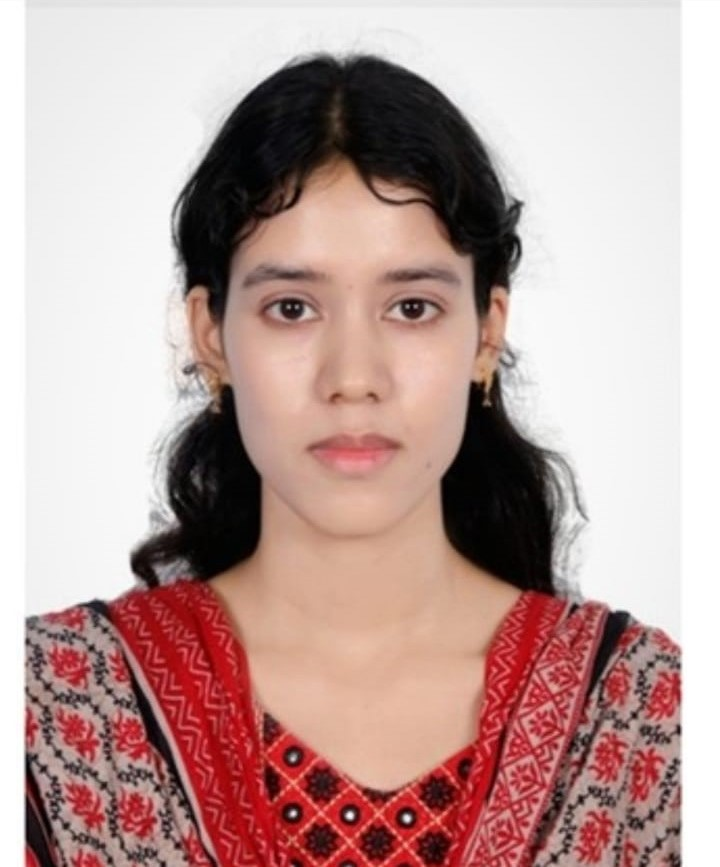

|
Name: Romaisha Zannat Email: romrom11248@email.com Phone: 01521795770 Address: Dhaka, Bangladesh |
 |
Motivated and detail-oriented engineering student seeking opportunities to apply technical and analytical skills in a growth-oriented organization while continuing professional development.
| Degree | Institution | Board/University | Year | Result |
|---|---|---|---|---|
| BSc in Computer Science and Engineering | American International University-Bangladesh (AIUB) | AIUB | 2023–Present | CGPA: 4 |
| HSC | Dinajpur Governtment College | Dinajpur Board | 2022 | GPA: 5 |
| SSC | Dinajpur Governtment High School | Dinajpur Board | 2019 | GPA: 5 |